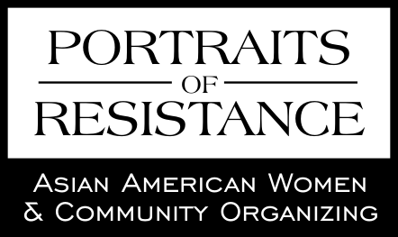

|  |
|
"Contrary to the erroneous stereotype that Asian American women are passive and submissive... we are not afraid to rock the boat. Making waves. This is what Asian American women have done and will continue to do." As part of my graduate program in social work, I completed an exploratory research project in October 2005 titled Portraits of Resistance: Asian American Women and Community Organizing. The goal of my study was to collect narrative data about the experiences of Asian American women who are community organizers. The questions guiding this study were as follows: What are the factors that led Asian American women to become community organizers? What is the impact of community organizing on their identity development and sense of self? What are the factors that sustain them in this work? I wanted to create this site in order to:
Continue to the introduction. |